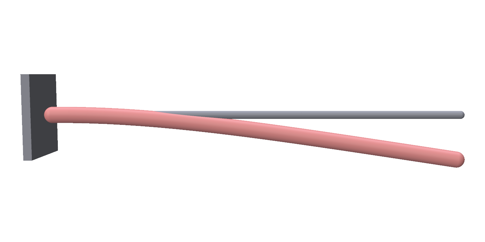
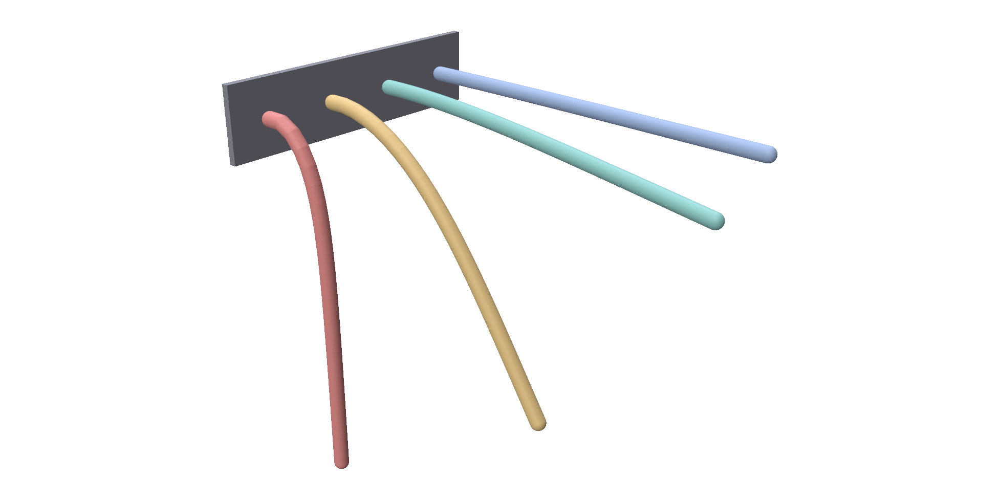
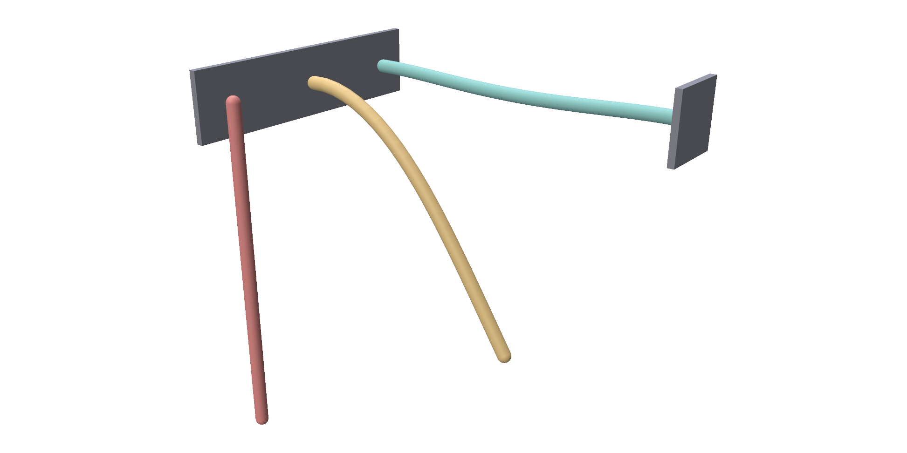
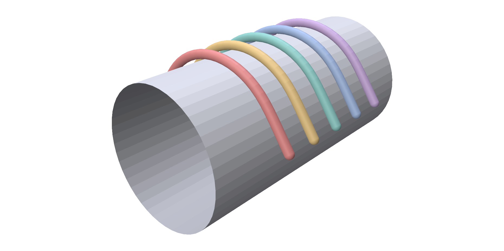

Rods¶
trusty.rods simulates thin elastic rods: cables, hair, wires and muscles. A
rod is a polyline with a round cross-section. It stretches, bends and twists,
and each edge carries a twist angle about its own axis.
Capability: rods.
Quick example¶
A rod clamped at one end, drooping under gravity:
world = trusty.World(backend=backend, timestep=1.0 / 60.0)
# The rod's centerline: N points in order, here straight along x.
X = np.zeros((N, 3))
X[:, 0] = np.linspace(0.0, LENGTH, N)
mat = trusty.rods.RodMaterial()
mat.youngs_modulus = YOUNGS # Pa
mat.radius = RADIUS # m
mat.density = DENSITY # kg/m^3
rod = trusty.rods.add_rod(world, X, mat)
trusty.rods.pin_vertices(world, rod, [0, 1]) # clamp the first edge
Each world.step() advances one timestep, and
trusty.rods.read_positions(world, rod) returns the current centerline as an
(N, 3) NumPy array.

The grey line is the rod's starting shape. add_rod adds the rod and returns
its id, which every other trusty.rods function takes.
| Argument | Meaning |
|---|---|
X |
the centerline, (N, 3): at least two points, in order along the rod |
material |
a RodMaterial; see Material |
X is also the rod's rest shape: the rod is unstressed when it has that shape.
The clamp comes from pin_vertices; see Pins and twist.
The headless run, --no-viewer, prints the tip sag: 0.111 m, where the
small-deflection beam formula gives 0.123 m. The difference is mostly the
clamped first edge, which does not bend; it shrinks as you add points.
Start rods straight
For now, give each rod a straight rest shape. A rod whose rest shape is curved resists turning as a whole, so it does not hang or swing as it should.
Full script: uv run examples/rods/rod_cantilever.py
"""Rod cantilever.
A straight elastic rod, clamped at one end, droops under gravity and settles.
The headless run prints the tip sag next to the small-deflection beam formula
q L^4 / (8 E I).
Usage:
uv run examples/rods/rod_cantilever.py
uv run examples/rods/rod_cantilever.py --no-viewer --steps 300
"""
from __future__ import annotations
import argparse
import sys
from pathlib import Path
import numpy as np
import trusty
sys.path.insert(0, str(Path(__file__).resolve().parent.parent))
from utils import init_polyscope # noqa: E402
N, LENGTH, RADIUS = 24, 1.0, 0.02
YOUNGS, DENSITY = 1e8, 1000.0
def build_world(backend: str = "auto"):
trusty.check_capabilities("rods")
world = trusty.World(backend=backend, timestep=1.0 / 60.0)
# The rod's centerline: N points in order, here straight along x.
X = np.zeros((N, 3))
X[:, 0] = np.linspace(0.0, LENGTH, N)
mat = trusty.rods.RodMaterial()
mat.youngs_modulus = YOUNGS # Pa
mat.radius = RADIUS # m
mat.density = DENSITY # kg/m^3
rod = trusty.rods.add_rod(world, X, mat)
trusty.rods.pin_vertices(world, rod, [0, 1]) # clamp the first edge
return world, rod
def beam_theory_sag() -> float:
"""Small-deflection tip sag of a uniform cantilever under its own weight."""
q = DENSITY * np.pi * RADIUS**2 * 9.81 # weight per length (N/m)
EI = YOUNGS * np.pi * RADIUS**4 / 4 # bending stiffness (N m^2)
return q * LENGTH**4 / (8 * EI)
def _rod_edges(n: int) -> np.ndarray:
return np.array([[i, i + 1] for i in range(n - 1)], dtype=np.int64)
def _register_visuals(ps, world, rod):
# read_positions returns the centerline, (N, 3). Draw it as a curve
# network with the rod's own radius.
X = trusty.rods.read_positions(world, rod)
edges = [[i, i + 1] for i in range(len(X) - 1)]
net = ps.register_curve_network("rod", X, np.array(edges))
net.set_radius(RADIUS, relative=False)
net.set_color((0.85, 0.55, 0.25))
return net
def run_polyscope(world, rod, steps: int):
ps = init_polyscope(headless=False)
net = _register_visuals(ps, world, rod)
state = {"i": 0, "playing": False}
def advance_one():
if state["i"] < steps:
world.step()
state["i"] += 1
net.update_node_positions(
np.asarray(trusty.rods.read_positions(world, rod)))
def callback():
import polyscope.imgui as psim
_, state["playing"] = psim.Checkbox("play", state["playing"])
psim.SameLine()
if psim.Button("step"):
advance_one()
elif state["playing"]:
advance_one()
psim.Text(f"step {state['i']} / {steps}")
report = world.last_report()
psim.Text(
f"last solve: iters={report.iterations} "
f"residual={report.final_residual:.3e} "
f"{'converged' if report.converged else 'DIVERGED'}")
ps.set_user_callback(callback)
ps.show()
def run_headless(world, rod, steps: int):
for i in range(steps):
world.step()
if not world.last_report().converged:
raise SystemExit(f"step {i}: DIVERGED")
sag = -float(np.asarray(trusty.rods.read_positions(world, rod))[-1, 2])
print(f"tip sag after {steps} steps: {sag:.4f} m "
f"(beam formula: {beam_theory_sag():.4f} m)")
def main():
parser = argparse.ArgumentParser(description=__doc__.split("\n")[0])
parser.add_argument("--backend",
choices=["auto", "cpu", "accelerate"], default="auto")
parser.add_argument("--steps", type=int, default=300)
parser.add_argument("--no-viewer", action="store_true",
help="headless: print the tip sag")
args = parser.parse_args()
world, rod = build_world(backend=args.backend)
if args.no_viewer:
run_headless(world, rod, args.steps)
else:
run_polyscope(world, rod, args.steps)
if __name__ == "__main__":
main()
Material¶
A RodMaterial holds the rod's stiffness, thickness and density:
mat = trusty.rods.RodMaterial()
mat.youngs_modulus = YOUNGS # Pa
mat.radius = RADIUS # m
mat.density = DENSITY # kg/m^3
| Field | Default | Meaning |
|---|---|---|
youngs_modulus |
1e6 |
Pa. Sets the stretching and bending stiffness. |
poisson_ratio |
0.3 |
Together with youngs_modulus, sets the twisting stiffness. |
radius |
0.01 |
m. The cross-section, round. Also the rod's thickness in contact. |
density |
1000 |
kg/m³ |
discretization |
DiscreteElasticRods |
how the rod is simulated. RodDiscretization.DiscreteElasticRods is the only choice today. |
Stiffness grows fast with the radius: bending stiffness goes as
youngs_modulus * radius**4, while weight goes as density * radius**2.
Each add_rod call adds another rod to the same world, with its own material.
Four rods, one per Young's modulus from 1 MPa to 1 GPa, from front to back:
mat = trusty.rods.RodMaterial()
mat.youngs_modulus = E
mat.radius = RADIUS
mat.density = DENSITY
X = np.zeros((N, 3))
X[:, 0] = np.linspace(0.0, LENGTH, N)
X[:, 1] = SPACING * k # side by side, in one world
rod = trusty.rods.add_rod(world, X, mat)
trusty.rods.pin_vertices(world, rod, [0, 1])

The two stiffest rods sag 0.111 m and 0.011 m, within 10% of the beam formula. The two softest sag too far for the formula to apply.
Full script: uv run examples/rods/rod_stiffness.py
"""Four cantilever rods, one per Young's modulus, drooping to rest.
Four rods share a length, radius and density and are clamped at one end; only
the Young's modulus differs, from 1 MPa to 1 GPa. The softest hangs almost
straight down, the stiffest barely droops. A timestep of 1 s with the velocity
zeroed after every step moves each rod straight to its resting shape, so a few
steps are enough. The headless run prints each tip sag next to the
small-deflection beam formula q L^4 / (8 E I), which only holds while the sag
is small compared with the length.
Usage:
uv run examples/rods/rod_stiffness.py # live polyscope
uv run examples/rods/rod_stiffness.py --no-viewer # print the sags
"""
from __future__ import annotations
import argparse
import sys
from pathlib import Path
import numpy as np
import trusty
sys.path.insert(0, str(Path(__file__).resolve().parent.parent))
from utils import init_polyscope # noqa: E402
N, LENGTH, RADIUS, DENSITY = 24, 1.0, 0.02, 1000.0
MODULI = (1e6, 1e7, 1e8, 1e9) # Pa, softest first
SPACING = 0.2 # y offset between rods (m)
COLORS = [(0.94, 0.33, 0.31), (0.98, 0.70, 0.30), (0.35, 0.75, 0.70),
(0.45, 0.60, 0.90)]
def build_world(backend: str = "auto"):
trusty.check_capabilities("rods")
world = trusty.World(backend=backend,
timestep=1.0, # large steps with no carried-over
time_stepping="quasi_static", # velocity: each one heads for rest
newton=trusty.NewtonConfig(max_iters=50))
rods = {}
for k, E in enumerate(MODULI):
mat = trusty.rods.RodMaterial()
mat.youngs_modulus = E
mat.radius = RADIUS
mat.density = DENSITY
X = np.zeros((N, 3))
X[:, 0] = np.linspace(0.0, LENGTH, N)
X[:, 1] = SPACING * k # side by side, in one world
rod = trusty.rods.add_rod(world, X, mat)
trusty.rods.pin_vertices(world, rod, [0, 1])
rods[E] = rod
return world, rods
def tip_sag(world, rod) -> float:
return -float(np.asarray(trusty.rods.read_positions(world, rod))[-1, 2])
def beam_theory_sag(E: float) -> float:
q = DENSITY * np.pi * RADIUS**2 * 9.81 # weight per length (N/m)
return q * LENGTH**4 / (8 * E * np.pi * RADIUS**4 / 4)
def run_viewer(world, rods, steps: int):
ps = init_polyscope(headless=False)
nets = {}
for k, (E, rod) in enumerate(rods.items()):
X = np.asarray(trusty.rods.read_positions(world, rod))
net = ps.register_curve_network(f"E = {E:.0e} Pa", X,
np.array([[i, i + 1] for i in range(N - 1)]))
net.set_radius(RADIUS, relative=False)
net.set_color(COLORS[k])
nets[E] = net
state = {"i": 0, "playing": False}
def callback():
import polyscope.imgui as psim
_, state["playing"] = psim.Checkbox("play", state["playing"])
psim.SameLine()
if (psim.Button("step") or state["playing"]) and state["i"] < steps:
world.step()
state["i"] += 1
for E, rod in rods.items():
nets[E].update_node_positions(
np.asarray(trusty.rods.read_positions(world, rod)))
psim.Text(f"step {state['i']} / {steps}")
for E, rod in rods.items():
psim.Text(f"E = {E:.0e} Pa sag {tip_sag(world, rod):.3f} m")
ps.set_user_callback(callback)
ps.show()
def main():
ap = argparse.ArgumentParser(description=__doc__.split("\n")[0])
ap.add_argument("--steps", type=int, default=5)
ap.add_argument("--backend", default="auto", choices=["auto", "cpu", "accelerate"])
ap.add_argument("--no-viewer", action="store_true",
help="headless: print each rod's tip sag")
args = ap.parse_args()
world, rods = build_world(args.backend)
if args.no_viewer:
for _ in range(args.steps):
world.step()
print(f"tip sag after {args.steps} steps (rod length {LENGTH} m)")
for E, rod in rods.items():
theory = beam_theory_sag(E)
note = (f"beam formula {theory:.4f} m" if theory < 0.2 * LENGTH
else "too large a sag for the beam formula")
print(f" E = {E:.0e} Pa {tip_sag(world, rod):.4f} m ({note})")
return
run_viewer(world, rods, args.steps)
if __name__ == "__main__":
main()
Pins and twist¶
pin_vertices(world, rod, indices) holds the listed vertices where they
start. How many you pin decides what kind of support it is:
# One vertex: a hinge. The rod turns freely about it.
trusty.rods.pin_vertices(world, hinge, [0])
# The first two vertices: a clamp. The first edge cannot move or turn.
trusty.rods.pin_vertices(world, clamp, [0, 1])
# Both ends clamped, with the twist of the two end edges held too.
trusty.rods.pin_vertices(world, bridge, [0, 1, N - 2, N - 1])
trusty.rods.pin_twist(world, bridge, [0, N - 2])

From front to back: the hinged rod hangs straight down, the clamped rod droops, and the rod clamped at both ends sags 18 mm in the middle.
| Function | Does |
|---|---|
pin_vertices(world, rod, indices) |
hold these vertices at their starting positions |
pin_twist(world, rod, edge_indices) |
hold the twist of these edges; edge i joins vertices i and i + 1 |
Pinning two neighbouring vertices fixes where their edge is and which way it
points, but the rod can still turn about that edge. pin_twist stops that
turning, so an edge with both its vertices and its twist pinned is fully
clamped.
Each call replaces the rod's earlier pins of that kind, so pass every index in one call. Set pins before the first step.
To pin a rod to a moving target, or to attach it to another body, use boundary conditions. The rod muscle example below attaches both ends of a rod to affine bodies.
Full script: uv run examples/rods/rod_pins.py
"""Three ways to hold a rod: a hinge, a clamp, and both ends clamped.
Three identical horizontal rods are held differently and left to settle under
gravity. Pinning one vertex makes a hinge: the rod swings down and hangs
straight. Pinning the first two vertices clamps the first edge, so the rod
droops like a cantilever. Clamping both ends makes a bridge that sags in the
middle; its end edges also have their twist held with `pin_twist`. A timestep
of 1 s with the velocity zeroed after every step moves each rod straight to
its resting shape.
Usage:
uv run examples/rods/rod_pins.py # live polyscope
uv run examples/rods/rod_pins.py --no-viewer # print the resting shapes
"""
from __future__ import annotations
import argparse
import sys
from pathlib import Path
import numpy as np
import trusty
sys.path.insert(0, str(Path(__file__).resolve().parent.parent))
from utils import init_polyscope # noqa: E402
N, LENGTH, RADIUS = 24, 1.0, 0.02
SPACING = 0.3 # y offset between rods (m)
COLORS = [(0.94, 0.33, 0.31), (0.98, 0.70, 0.30), (0.35, 0.75, 0.70)]
def add_straight_rod(world, y: float):
mat = trusty.rods.RodMaterial()
mat.youngs_modulus = 1e7
mat.radius = RADIUS
mat.density = 1000.0
X = np.zeros((N, 3))
X[:, 0] = np.linspace(0.0, LENGTH, N)
X[:, 1] = y
return trusty.rods.add_rod(world, X, mat)
def build_world(backend: str = "auto"):
trusty.check_capabilities("rods")
world = trusty.World(backend=backend,
timestep=1.0, # large steps with no carried-over
time_stepping="quasi_static", # velocity: each one heads for rest
newton=trusty.NewtonConfig(max_iters=50))
hinge = add_straight_rod(world, 0.0)
clamp = add_straight_rod(world, SPACING)
bridge = add_straight_rod(world, 2 * SPACING)
# One vertex: a hinge. The rod turns freely about it.
trusty.rods.pin_vertices(world, hinge, [0])
# The first two vertices: a clamp. The first edge cannot move or turn.
trusty.rods.pin_vertices(world, clamp, [0, 1])
# Both ends clamped, with the twist of the two end edges held too.
trusty.rods.pin_vertices(world, bridge, [0, 1, N - 2, N - 1])
trusty.rods.pin_twist(world, bridge, [0, N - 2])
return world, {"hinge": hinge, "clamp": clamp, "bridge": bridge}
def run_viewer(world, rods, steps: int):
ps = init_polyscope(headless=False)
nets = {}
edges = np.array([[i, i + 1] for i in range(N - 1)])
for k, (name, rod) in enumerate(rods.items()):
net = ps.register_curve_network(
name, np.asarray(trusty.rods.read_positions(world, rod)), edges)
net.set_radius(RADIUS, relative=False)
net.set_color(COLORS[k])
nets[name] = net
state = {"i": 0, "playing": False}
def callback():
import polyscope.imgui as psim
_, state["playing"] = psim.Checkbox("play", state["playing"])
psim.SameLine()
if (psim.Button("step") or state["playing"]) and state["i"] < steps:
world.step()
state["i"] += 1
for name, rod in rods.items():
nets[name].update_node_positions(
np.asarray(trusty.rods.read_positions(world, rod)))
psim.Text(f"step {state['i']} / {steps}")
ps.set_user_callback(callback)
ps.show()
def main():
ap = argparse.ArgumentParser(description=__doc__.split("\n")[0])
ap.add_argument("--steps", type=int, default=10)
ap.add_argument("--backend", default="auto", choices=["auto", "cpu", "accelerate"])
ap.add_argument("--no-viewer", action="store_true",
help="headless: print where each rod comes to rest")
args = ap.parse_args()
world, rods = build_world(args.backend)
if args.no_viewer:
for i in range(args.steps):
world.step()
if not world.last_report().converged:
print(f"step {i}: Newton did not converge")
print(f"after {args.steps} steps:")
for name, rod in rods.items():
x = np.asarray(trusty.rods.read_positions(world, rod))
print(f" {name:<7} lowest point z = {x[:, 2].min():+.3f} m, "
f"far end at x = {x[-1, 0]:.3f} m")
return
run_viewer(world, rods, args.steps)
if __name__ == "__main__":
main()
Rod muscles¶
A rod muscle pulls along a path of rod vertices, like a muscle and its tendon. Here a muscle rod runs down the front of an arm, with its ends attached to the two bones, and pulls the forearm up:
# A Hill-type muscle along the whole rod, vertex 0 to the last.
muscle = trusty.rods.add_rod_muscle(
world, rod, list(range(N_MUSCLE)),
f_max=F_MAX, # peak isometric force (N)
l_opt=rest_len, # optimal fiber length (m)
l_tendon_slack=0.1, # tendon slack length (m)
pennation=0.0, activation=0.0)
add_rod_muscle returns the muscle's id. A rod can carry several muscles, and
num_muscles(world, rod) counts them.
| Argument | Meaning |
|---|---|
path_vertices |
the rod vertices the muscle runs through, in order; at least two |
f_max |
N. The largest active pull, reached when the fibre is at l_opt. |
l_opt |
m. The fibre length at which the muscle pulls hardest. |
l_tendon_slack |
m. The length of the tendon, which does not stretch. |
pennation |
fibre angle to the path, in radians. Scales the pull by its cosine. Default 0. |
activation |
the starting activation, from 0 to 1. Default 0. |
The fibre length is the path length minus l_tendon_slack. The active pull
is activation * f_max, scaled down as the fibre gets longer or shorter than
l_opt. A fibre stretched past l_opt also pulls on its own, even at
activation 0, and that pull grows steeply with stretch.
Set the activation at any time; it holds until you change it and takes effect on the next step:
Below, the activation rises from 0 to 1, then holds at 1. Settled at 0, the forearm droops to 76° below horizontal, held up only by the stretched muscle. Settled at 0.5, the muscle has shortened from 0.88 m to 0.34 m and lifted the forearm to 53° above horizontal; at 1 it lifts it to 68°.
Full script: uv run examples/rods/muscle_arm.py
"""A rod muscle flexing a two-bone arm.
An upper-arm bar is held fixed at the shoulder, and a forearm bar is hinged to
it at the elbow, starting horizontal. A Hill-type rod muscle runs from the
front of the upper arm to the top of the forearm: its end vertices are
stitched to the two bones, and its tension acts along the rod. At activation 0
the forearm droops under gravity, held up a little by the stretched muscle;
raising the activation contracts the muscle and curls the forearm up.
The velocity is zeroed after every step, so the arm moves to its resting pose
for the current activation instead of swinging about it. The headless run
settles the arm at activations 0, 0.5 and 1 in turn and prints each pose; the
viewer has an activation slider.
Usage:
uv run examples/rods/muscle_arm.py # polyscope + slider
uv run examples/rods/muscle_arm.py --no-viewer # print the poses
"""
from __future__ import annotations
import argparse
import sys
from pathlib import Path
import numpy as np
import trusty
sys.path.insert(0, str(Path(__file__).resolve().parent.parent))
from utils import init_polyscope # noqa: E402
SHOULDER_Z = 2.0
UPPER_LEN = 1.0 # shoulder -> elbow (down z)
UPPER_HALF = 0.06
FORE_LEN = 1.0 # elbow -> wrist (out +x, starts horizontal)
FORE_HALF = 0.05
N_MUSCLE = 5 # rod vertices along the muscle
F_MAX = 400.0 # peak isometric muscle force (N)
ACTIVATIONS = (0.0, 0.5, 1.0) # the headless run's poses
def make_box(center, half):
h = np.asarray(half, dtype=np.float64)
V = np.array(
[[-h[0], -h[1], -h[2]], [h[0], -h[1], -h[2]],
[h[0], h[1], -h[2]], [-h[0], h[1], -h[2]],
[-h[0], -h[1], h[2]], [h[0], -h[1], h[2]],
[h[0], h[1], h[2]], [-h[0], h[1], h[2]]],
dtype=np.float64,
) + np.asarray(center, dtype=np.float64)
F = np.array(
[[4, 5, 6], [4, 6, 7], [0, 3, 2], [0, 2, 1],
[1, 2, 6], [1, 6, 5], [0, 4, 7], [0, 7, 3],
[3, 7, 6], [3, 6, 2], [0, 1, 5], [0, 5, 4]],
dtype=np.int32,
)
return V, F
def build_world(backend: str = "auto"):
trusty.check_capabilities("rods", "affine", "boundary_conditions")
world = trusty.World(backend=backend,
timestep=0.1,
time_stepping="quasi_static", # settle to each pose, no swinging
newton=trusty.NewtonConfig(max_iters=60))
elbow = np.array([0.0, 0.0, SHOULDER_Z - UPPER_LEN])
# Upper arm: vertical bar, shoulder (top) -> elbow, held fixed at the
# shoulder.
up_c = (0.0, 0.0, SHOULDER_Z - UPPER_LEN / 2)
up_V, up_F = make_box(up_c, (UPPER_HALF, UPPER_HALF, UPPER_LEN / 2))
upper = trusty.affine.add_affine_body(world, up_V, up_F,
density=1000.0, stiffness=1e8)
trusty.affine.add_fixed_joint(
world, upper, (0.0, 0.0, SHOULDER_Z), (1.0, 0.0, 0.0), (0.0, 1.0, 0.0),
stiffness=1e8)
# Forearm: horizontal bar, elbow -> wrist in +x. Revolute-hinged to the
# upper arm at the elbow. Starts horizontal; gravity droops it.
fore_c = (elbow[0] + FORE_LEN / 2, 0.0, elbow[2])
fo_V, fo_F = make_box(fore_c, (FORE_LEN / 2, FORE_HALF, FORE_HALF))
fore = trusty.affine.add_affine_body(world, fo_V, fo_F,
density=500.0, stiffness=1e8)
trusty.affine.add_revolute_joint(
world, fore, (elbow[0], -UPPER_HALF, elbow[2]),
(elbow[0], UPPER_HALF, elbow[2]), upper, stiffness=1e8)
# Muscle rod: a straight polyline from high on the front of the upper arm
# to the top of the forearm, near the elbow.
origin = np.array([UPPER_HALF, 0.0, SHOULDER_Z - 0.4])
insertion = np.array([elbow[0] + 0.3, 0.0, elbow[2] + FORE_HALF])
X = np.linspace(origin, insertion, N_MUSCLE)
mat = trusty.rods.RodMaterial()
mat.youngs_modulus = 1e5
mat.radius = 8e-3
mat.density = 1000.0
rod = trusty.rods.add_rod(world, X, mat)
# Its first vertex rides on the upper arm, its last on the forearm.
trusty.boundary_conditions.stitch(world, rod, [0], upper)
trusty.boundary_conditions.stitch(world, rod, [N_MUSCLE - 1], fore)
rest_len = float(np.linalg.norm(insertion - origin))
# A Hill-type muscle along the whole rod, vertex 0 to the last.
muscle = trusty.rods.add_rod_muscle(
world, rod, list(range(N_MUSCLE)),
f_max=F_MAX, # peak isometric force (N)
l_opt=rest_len, # optimal fiber length (m)
l_tendon_slack=0.1, # tendon slack length (m)
pennation=0.0, activation=0.0)
return world, upper, fore, rod, muscle
def forearm_angle(world, fore) -> float:
"""Forearm angle above the horizontal at the elbow, in degrees."""
c = np.asarray(trusty.affine.surface(world, fore)[0]).mean(axis=0)
return float(np.degrees(np.arctan2(c[2] - (SHOULDER_Z - UPPER_LEN), c[0])))
def run_phase(world, muscle, activation: float, steps: int):
"""Hold `activation` for `steps` steps; return the muscle's length and force."""
trusty.rods.set_muscle_activation(world, muscle, activation) # in [0, 1]
for i in range(steps):
world.step()
if not world.last_report().converged:
raise SystemExit(f"step {i}: Newton did not converge")
length = trusty.rods.muscle_length(world, muscle) # path length (m)
force = trusty.rods.muscle_force(world, muscle) # tension (N)
return length, force
def run_headless(world, upper, fore, rod, muscle, steps: int):
print(f"muscle rest length {trusty.rods.muscle_length(world, muscle):.3f} m")
angles = []
for activation in ACTIVATIONS:
length, force = run_phase(world, muscle, activation, steps)
angles.append(forearm_angle(world, fore))
print(f"activation {activation:.1f}: forearm {angles[-1]:+.1f} deg, "
f"muscle length {length:.3f} m, force {force:.1f} N")
if not all(a < b for a, b in zip(angles, angles[1:])):
raise SystemExit("more activation did not curl the forearm further")
def _register(ps, world, rod, upper, fore):
up_V, up_F = trusty.affine.surface(world, upper)
fo_V, fo_F = trusty.affine.surface(world, fore)
ps_up = ps.register_surface_mesh("upper_arm", np.asarray(up_V),
np.asarray(up_F), color=(0.6, 0.6, 0.65))
ps_fo = ps.register_surface_mesh("forearm", np.asarray(fo_V),
np.asarray(fo_F), color=(0.6, 0.6, 0.65))
X = np.asarray(trusty.rods.read_positions(world, rod))
edges = np.array([[i, i + 1] for i in range(len(X) - 1)], dtype=np.int64)
net = ps.register_curve_network("muscle", X, edges, color=(0.85, 0.2, 0.2))
net.set_radius(0.012, relative=False)
return ps_up, ps_fo, net
def run_polyscope(world, upper, fore, rod, muscle):
ps = init_polyscope(headless=False)
ps_up, ps_fo, net = _register(ps, world, rod, upper, fore)
state = {"i": 0, "playing": True, "act": 0.0}
def advance():
trusty.rods.set_muscle_activation(world, muscle, state["act"])
world.step()
state["i"] += 1
ps_up.update_vertex_positions(
np.asarray(trusty.affine.surface(world, upper)[0]))
ps_fo.update_vertex_positions(
np.asarray(trusty.affine.surface(world, fore)[0]))
net.update_node_positions(
np.asarray(trusty.rods.read_positions(world, rod)))
def callback():
import polyscope.imgui as psim
_, state["playing"] = psim.Checkbox("play", state["playing"])
changed, state["act"] = psim.SliderFloat("activation", state["act"], 0.0, 1.0)
if state["playing"] or changed:
advance()
psim.Text(f"step {state['i']} forearm {forearm_angle(world, fore):+.1f} deg")
psim.Text(f"muscle: L={trusty.rods.muscle_length(world, muscle):.3f} m "
f"F={trusty.rods.muscle_force(world, muscle):.1f} N")
ps.set_user_callback(callback)
ps.show()
def main():
p = argparse.ArgumentParser(description=__doc__.split("\n")[0])
p.add_argument("--backend", choices=["auto", "cpu", "accelerate"], default="auto")
p.add_argument("--steps", type=int, default=80,
help="steps per activation in the headless run")
p.add_argument("--no-viewer", action="store_true",
help="headless: print the pose at each activation")
args = p.parse_args()
world, upper, fore, rod, muscle = build_world(backend=args.backend)
if args.no_viewer:
run_headless(world, upper, fore, rod, muscle, args.steps)
else:
run_polyscope(world, upper, fore, rod, muscle)
if __name__ == "__main__":
main()
Reading results¶
read_positions returns the centerline; draw it as a curve with the rod's
radius, for example in polyscope:
# read_positions returns the centerline, (N, 3). Draw it as a curve
# network with the rod's own radius.
X = trusty.rods.read_positions(world, rod)
edges = [[i, i + 1] for i in range(len(X) - 1)]
net = ps.register_curve_network("rod", X, np.array(edges))
net.set_radius(RADIUS, relative=False)
Muscles report their current length and pull:
length = trusty.rods.muscle_length(world, muscle) # path length (m)
force = trusty.rods.muscle_force(world, muscle) # tension (N)
| Function | Returns |
|---|---|
read_positions(world, rod) |
the current centerline, (N, 3), rows matching X |
num_muscles(world, rod) |
how many muscles the rod carries |
muscle_activation(world, muscle) |
the current activation |
muscle_length(world, muscle) |
the path length in m; before the first step, the starting length |
muscle_force(world, muscle) |
the pull in N; zero before the first step |
Contact¶
With contact on, each rod is a tube of its own radius: its centerline is
kept at least a radius from surfaces, and two radii from other rods. Nothing else is
needed on the rod's side:
trusty.contact.enable(world, trusty.contact.Config(
dhat=min(0.01, 0.5 * radius), # contact band scales with the rod
))
mu = 0.4 # friction so the rods grip and stay wrapped: the cylinder's and each rod's
Vc, Fc = make_cylinder(cyl_r, -0.6, 0.6, 48, 24)
trusty.contact.add_wall(world, "cylinder", Vc, Fc, friction_mu=mu)
mat = trusty.rods.RodMaterial()
mat.youngs_modulus = 1e6 # floppy enough to drape around the cylinder
mat.radius = radius # also the rod's thickness in contact
mat.density = 1000.0
Five rods drop onto a fixed cylinder and wrap around it. Friction holds them in place:

See Contact for the contact settings. rod_drop.py drops a
single rod onto the ground.
Full script: uv run examples/rods/rod_cylinder_wrap.py
"""Rods wrapping a cylinder.
A row of parallel elastic rods drops onto a fixed cylinder, drapes over it, and
wraps down its sides. Contact treats each rod as a tube of its own radius:
rods stay one radius off the cylinder and two radii off each other. Friction
lets the rods grip and stay wrapped instead of sliding off.
`--num-rods` sets how many rods drop; the rod radius shrinks with the count so
neighbours never overlap along the cylinder. `--cylinder-radius` sizes the
cylinder: a smaller cylinder lets the fixed-length rods wrap further around it.
The headless run prints how close the rods come to the cylinder.
Usage:
uv run examples/rods/rod_cylinder_wrap.py
uv run examples/rods/rod_cylinder_wrap.py --num-rods 12
uv run examples/rods/rod_cylinder_wrap.py --cylinder-radius 0.15
uv run examples/rods/rod_cylinder_wrap.py --no-viewer --steps 240
"""
from __future__ import annotations
import argparse
import sys
from pathlib import Path
import numpy as np
import trusty
sys.path.insert(0, str(Path(__file__).resolve().parent.parent))
from utils import init_polyscope # noqa: E402
N, LENGTH = 30, 1.0 # rod resolution; length > cylinder diameter -> wraps
CYL_R = 0.3 # default cylinder radius (see --cylinder-radius)
Y_SPAN = 0.6 # rods spread over y in [-Y_SPAN/2, +Y_SPAN/2]
MAX_RADIUS = 0.02
DROP_ABOVE = 0.15 # rod centerline starts this far above the cylinder top
def make_cylinder(R: float, y0: float, y1: float, na: int, nl: int):
"""Lateral surface of a cylinder of radius R along the y-axis."""
ys = np.linspace(y0, y1, nl + 1)
th = 2.0 * np.pi * np.arange(na) / na
V = np.zeros(((nl + 1) * na, 3))
for l, y in enumerate(ys):
V[l * na:(l + 1) * na] = np.stack(
[R * np.cos(th), np.full(na, y), R * np.sin(th)], axis=1)
F = []
for l in range(nl):
for a in range(na):
a1 = (a + 1) % na
v00, v01 = l * na + a, l * na + a1
v10, v11 = (l + 1) * na + a, (l + 1) * na + a1
F.append([v00, v10, v11])
F.append([v00, v11, v01])
return V, np.asarray(F, dtype=np.int32)
def rod_radius(num_rods: int) -> float:
"""Radius that keeps neighbouring rods clear: 2*radius stays below the
y-spacing, capped at MAX_RADIUS so few-rod worlds keep the tuned size."""
spacing = Y_SPAN / (num_rods - 1) if num_rods > 1 else Y_SPAN
return min(MAX_RADIUS, 0.3 * spacing)
def build_world(backend: str = "auto", *, num_rods: int = 5, cyl_r: float = CYL_R):
trusty.check_capabilities("rods", "contact")
radius = rod_radius(num_rods)
world = trusty.World(backend=backend, timestep=1.0 / 120.0, time_stepping="bdf2")
trusty.contact.enable(world, trusty.contact.Config(
dhat=min(0.01, 0.5 * radius), # contact band scales with the rod
))
mu = 0.4 # friction so the rods grip and stay wrapped: the cylinder's and each rod's
Vc, Fc = make_cylinder(cyl_r, -0.6, 0.6, 48, 24)
trusty.contact.add_wall(world, "cylinder", Vc, Fc, friction_mu=mu)
mat = trusty.rods.RodMaterial()
mat.youngs_modulus = 1e6 # floppy enough to drape around the cylinder
mat.radius = radius # also the rod's thickness in contact
mat.density = 1000.0
ids = []
for ri in range(num_rods):
y = -0.5 * Y_SPAN + Y_SPAN * ri / (num_rods - 1) if num_rods > 1 else 0.0
X = np.zeros((N, 3))
X[:, 0] = np.linspace(0.0, LENGTH, N) - LENGTH / 2
X[:, 1] = y
X[:, 2] = cyl_r + DROP_ABOVE
ids.append(trusty.rods.add_rod(world, X, mat, friction_mu=mu))
return world, ids, radius, (Vc, Fc)
def _rod_edges(n: int) -> np.ndarray:
return np.array([[i, i + 1] for i in range(n - 1)], dtype=np.int64)
def _register_visuals(ps, world, ids, radius, cylinder):
Vc, Fc = cylinder
ps.register_surface_mesh("cylinder", Vc, Fc, color=(0.6, 0.6, 0.6))
nets = []
for k, rid in enumerate(ids):
X = np.asarray(trusty.rods.read_positions(world, rid))
net = ps.register_curve_network(f"rod{k}", X, _rod_edges(len(X)),
color=(0.85, 0.55, 0.25))
net.set_radius(radius, relative=False)
nets.append(net)
return nets
def _update(nets, world, ids):
for net, rid in zip(nets, ids):
net.update_node_positions(
np.asarray(trusty.rods.read_positions(world, rid)))
def run_polyscope(world, ids, radius, cylinder, steps: int):
ps = init_polyscope(headless=False)
nets = _register_visuals(ps, world, ids, radius, cylinder)
state = {"i": 0, "playing": False}
def advance_one():
if state["i"] < steps:
world.step()
state["i"] += 1
_update(nets, world, ids)
def callback():
import polyscope.imgui as psim
_, state["playing"] = psim.Checkbox("play", state["playing"])
psim.SameLine()
if psim.Button("step"):
advance_one()
elif state["playing"]:
advance_one()
psim.Text(f"step {state['i']} / {steps}")
report = world.last_report()
psim.Text(
f"last solve: iters={report.iterations} "
f"residual={report.final_residual:.3e} "
f"{'converged' if report.converged else 'DIVERGED'}")
ps.set_user_callback(callback)
ps.show()
def run_headless(world, ids, radius, cyl_r: float, steps: int):
for i in range(steps):
world.step()
if not world.last_report().converged:
raise SystemExit(f"step {i}: Newton did not converge")
xs = [np.asarray(trusty.rods.read_positions(world, rid)) for rid in ids]
gap = min(np.hypot(x[:, 0], x[:, 2]).min() for x in xs) - cyl_r - radius
low = min(x[:, 2].min() for x in xs)
print(f"after {steps} steps: closest rod surface {gap * 1e3:.1f} mm off the "
f"cylinder; rod ends down to z = {low:.3f} m (cylinder axis at z = 0)")
def main():
parser = argparse.ArgumentParser(description=__doc__.split("\n")[0])
parser.add_argument("--backend",
choices=["auto", "cpu", "accelerate"], default="auto")
parser.add_argument("--steps", type=int, default=360)
parser.add_argument("--no-viewer", action="store_true",
help="headless: print how the rods came to rest")
parser.add_argument("--num-rods", type=int, default=5)
parser.add_argument("--cylinder-radius", type=float, default=CYL_R,
help="cylinder radius; smaller -> rods wrap further")
args = parser.parse_args()
world, ids, radius, cylinder = build_world(
backend=args.backend, num_rods=args.num_rods, cyl_r=args.cylinder_radius)
print(f"{args.num_rods} rods on a cylinder (R = {args.cylinder_radius}, "
f"rod radius = {radius:.4f})")
if args.no_viewer:
run_headless(world, ids, radius, args.cylinder_radius, args.steps)
else:
run_polyscope(world, ids, radius, cylinder, args.steps)
if __name__ == "__main__":
main()
Reference¶
Every function and argument: trusty.rods reference.